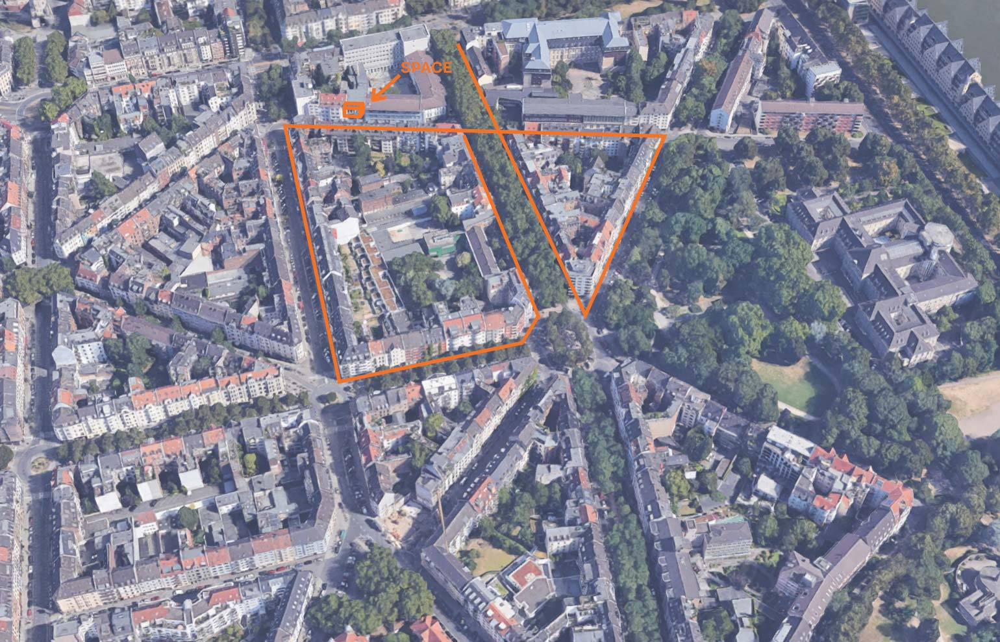

How to invite members of the public to come and join Open Expression Support?
After hanging the first version of the invite on over 35 doors in the streets surrounding the school (orange in the picture), I had no idea whether it would address people at all. Not having any reply in the first days, made me doubt my initial strategy. I thought the 'route' might have been too long as people had to read the long invite, browse to the website, watch the 3-minute video and compose an email to voice their motivation. I thought if the message moves someone, they'll happily go through that effort. I had reservations sharing my private email and number straight on the public invitation.

Among my peers who were aware of my endeavour, the intent of the experiment was received with curiosity, but also with great scepticism (and pessimism?), including from myself. Statements such as 'people generally don't care about what you do' and 'you need to catch them swiftly, attention is fragmented and scarce' or 'a bit of friction along the way, and they'll drop out' are common speech among creatives and entrepreneurs. A silky-smooth user experience wouldn't fit my case, I believed. I was convinced that the invites were being read, that's why I chose the 'message to the neighbours' strategy in the first place. But since I wasn't getting any response, I started crafting a simpler route, where people wouldn't have to email me, but instead, by the click of a button, could leave behind an email address.
Until I received my first reply! It came 10 days after I hung the invites, as the respondent bumped into one while walking in the Südstadt. He himself lived on the other side of the ring. Yet I was delighted. This single positive and hopeful response gave me the confirmation that I wasn't a madman after all and gave me the energy to continue my current strategy, with some slight adaptations.
So I continued. The language on the website was reviewed and corrected and I made small changes to the invite. I also developed a second version of the invite, where I took a more ad-style tone of voice, addressing people with questions, including examples of what OES could mean to them. My contact details were now also on both the invitations.


By covering several streets and leaving the invites in local business, I wanted to increase my reach (yellow in the picture). As an experiment, I hung the ad-style one on about a third of the doors and the original message on the rest. The final amount of invites that were spread during this second round totalled at 120. I also made a Facebook account to post my endeavours on 'Meine Südstadt', a Facebook group that has over 23000 members.
Within 5 days, 7 people wrote to me saying they found the message and would like to join 'Offene Ausdrucksberatung'. Hurray! With 8 participants in line, I stopped undertaking any more steps towards spreading the word and focused on organising the first meetings. Eventually, I managed to meet 7 out of the 8 people who got in touch with me, and each one of them expressed their motivation and commitment to join the weekly individual sessions until the end of October/beginning November. The visual below shows which 'route' (which message leading to the website) the different participants were exposed to and responded to.
This means that 5 people found me through the original/edited message, 1 person responded on the Facebook post who then reached out to a friend who also lives in the Südstadt, and only one person got to me through the new invitation where I took a different tone of voice. In August 2020, the website that showed the video www.openexpression.support had 71 unique views (minus approx. 20 of myself, friends and family) of which 12 referrals through the QR-code. The video though has only been viewed 22 times, with just 13 unique viewers according to Youtube analytics. The video is not publicly displayed on Youtube and can only be accessed through the website. Now I know of 3 different friends who have watched the video as I forwarded it to them.
Thus, if the analytics are true, it would imply that the video has been viewed by about 10 individuals. All 8 respondents shared with me that they have watched the video. That gives a pretty high success rate. Does that mean they were already convinced by the message, and the video just assured their interest? Some participants mentioned that seeing the video convinced them of joining. Others told me they felt strongly addressed by the invitation and the video was a 'nice bonus'. The one person who saw the second invitation even thought 'Offene Ausdrucksberatung' was a real service that I volunteered for or something. In another post, I'll write about the demographics of the participants. All in all, I'm surprised that it worked out. Where I envisioned having anything between 6-15 participants, 7 seems appropriate.
7 people x 8 sessions = 56 sessions of 1.5 hours
Here we go!